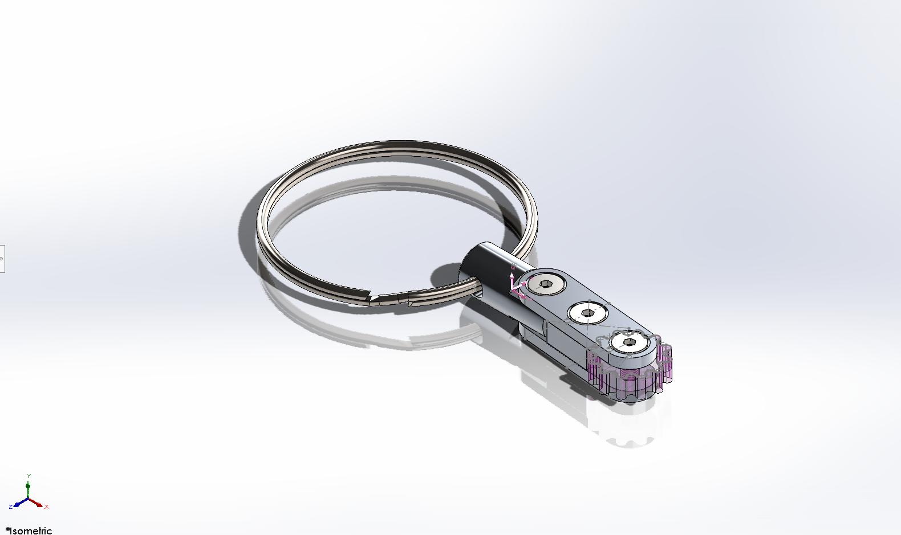
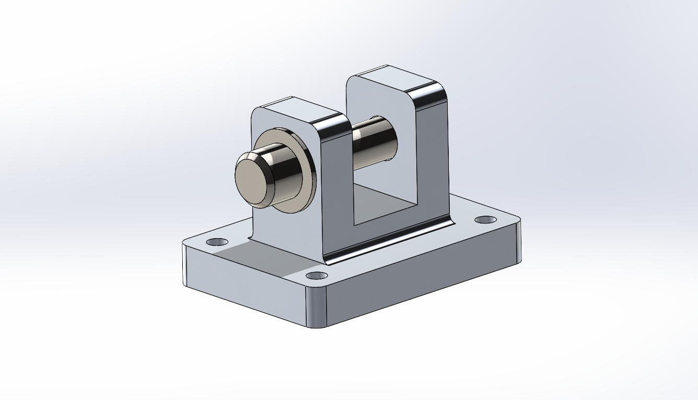
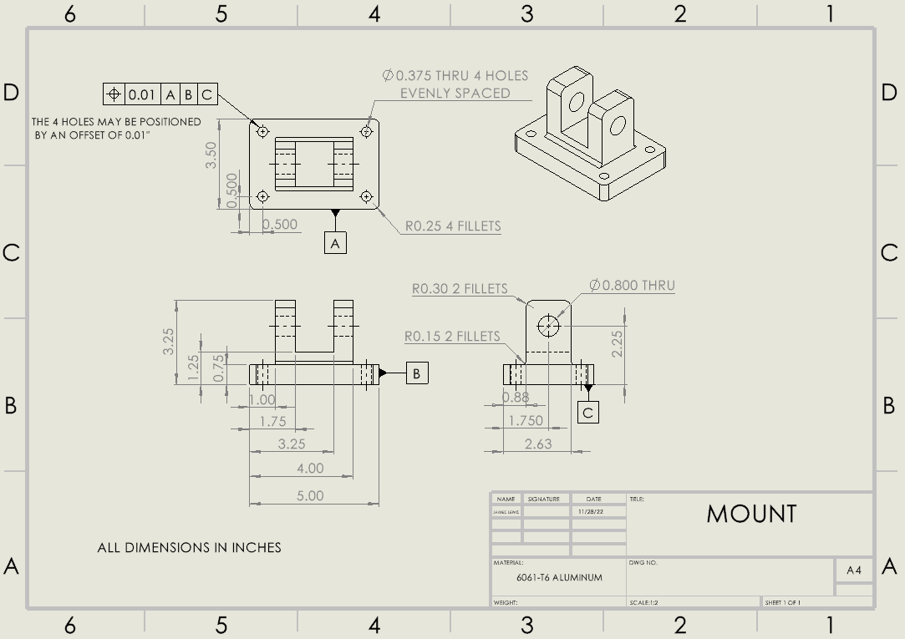

The mechanical gripper design features a worm gear with three worm wheels mated at 120 degrees from each other. This allows for a simple mechanism for a 3-jawwed gripper design. The worm wheels feature an arm that connects to the bottom of the gripper arm by a pin that allows for rotation. Each worm wheel includes a bore with a keyway that mates with a key and a shaft that features a key seat. The key, key seat, and keyway prevent relative motion between the shaft and the worm wheel.
Mechanical Gripper
Find Out More About My Mechanical Gripper

To practice my 3D CAD skills, I decided to come up with a design for a 3-jawwed mechanical gripper and model it from scratch using SolidWorks. I went through lots of research on different types of gears, keyseats, keys, keyways, bearings, pins, and different mechanisms to achieve the desired gripping motion. Using this research, I came up with some quick sketches outlining important parts of the gripper. From there I started Cading the parts of the gripper and eventually mating them together in the final assembly.
On either side of the shaft and at the end of the worm gear there is a ball bearing which supports the radial and axial loads while reducing the friction caused by rotation. The Bearings/shaft are mated to the body of the gripper. Also, there is a guiding arm that moves parallel to the arm(on the worm wheel) and connects to the middle of the gripper arm/jaw by a pin that allows for rotation. The guiding arm rotates about a static shaft that sits above the worm wheel shaft.
The gripper arms/jaws features an angled arm with two holes for the pin and arm connections and a slightly extruded face with small teeth that is straight. With all the parts mated together the assembly allows for all three arms to move in and out by rotation of the worm gear. I have created a new motion study and added a motor turning the end shaft of the worm gear clockwise and counterclockwise to demonstrate how the gripper would work.
Stair Climbing Robot
Find Out More About My Stair Climbing Robot
A team of three mechanical engineering students and I designed, built, programmed, and tested a LEGO EV3 robot to continuously climb stairs. I designed a 3D printed support for the robot using drafting, measuring, and SolidWorks skills. The robot was programmed in RobotC to drive, identify stairs, stabilize, and move the elevator/back stilt vertically to climb stairs. Testing was conducted on various stairs, with the front elevator system occasionally stuck.
The first approach towards designing our robot was to outline a couple of functional requirements, non- functional requirements, and constraint requirements that our robot had to meet. Using these design characteristics we made an engineering design specification which outlined verification methods and quantified some of the characteristics to ensure they were met. We then created three conceptual designs and used a decision making matric to decide on the best design.
The design chosen included a rear stilt with two wheels which moves vertically by a worm gear meshed with a rack and pinion system. Other important functions are a front clamp with an ultrasonic sensor used for sensing stairs and holding the front, a rubber band and string spool elevator system for vertically moving the front clamp, two drive wheels attached to the main body, and a gyroscope to help stabilize the robot.The design featured a 3D printed support that secures the back stilt to the main body and ensures the rack fully engages with the pinion. To design this part, I took measurements of the back stilt and of various LEGO pieces using a vernier caliper. Then I made some quick sketches to get an idea of what the part should look like and outlined some of the measurements.
Using the measurements and sketches I 3D modeled the part in SolidWorks and 3D printed it using ABS (Acrylonitrile butadiene styrene) filament. The robot was programmed in RobotC to drive, sense stairs, stabilize, move the elevator and back stilt, and many more functions. We did many phases of testing on different types of stairs with different heights and surfaces to ensure that the robot could consistently climb stairs. The robot was able to continuously identify a stair and climb the stair. The robot worked well except for the weak front elevator system that occasionally got stuck moving up, as the elastic bands lacked the strength to pull the front clamp up.
Toy Hovercraft
Find Out More About My Toy Hovercraft
A group of three mechanical engineering students and I designed and built a toy hovercraft, focusing on weight reduction and air trapping. The final design, without a back fan and garbage bag, improved hovering, and movement across flat surfaces. Despite flaws like heavy fans and poor circuits, the experience provided valuable teamwork and learning.
The picture on the left is the first prototype of the hovercraft which features 2 pc fans powered each by a 9-volt battery, two pieces of rectangular Styrofoam, a garbage bag, and duct tape. The piece of Styrofoam with the fan in it is the base while the bottom piece has a large rectangle cut into it and with the garbage bag (which also has a rectangular shaped hole in it) it acts as a skirt which helps trap a cushion of air under the craft.
Unfortunately, the first prototype did not hover as it was too heavy, and air was not being trapped under the craft effectively. So, we went back to the drawing board and came up with what ended up being our last design. The toy Hovercraft features the same design as the first prototype without the back fan and no garbage bag. In doing so the weight was reduced and the air was effectively being trapped. This meant sacrificing the idea of propelling it forwards but we were more focused on having the craft hover.
Also, we connected two 9V batteries in series to get 18V resulting in higher fan speed thus more air. Although the batteries drained faster, and the hovercraft was unable to propel itself forwards. The toy hovercraft was able to hover and move across flat surfaces with little friction. Though the design has many flaws such as fans that were too large/heavy and a poor circuit, it was a good exposure to designing and building a mechanical system in a team and a great learning experience.
Other Projects
Find Out More About My Other Projects
CAD Model and Machined Key Chain


Starting with a cylindrical rod of 2024 aluminum alloy I used a lathe and milling machine to cut and shape the rod, leaving a smooth finish and a chamfer on the outer edge. I used a bandsaw to cut the metal rod shorter. I used a drill press to drill two holes in the cylindrical part and drilled three holes in the bottom and top plates. Then I tapped the holes on the bottom plate leaving threads for the screws. The holes in the top plate were countersunk so the screws would sit flush with the top face. The holes were deburred, and the plate faces were sanded for a smoother finish. Then I assembled the key chain with the spur gear, middle component, and key ring. I took three screws to fasten the top plate and additional components to the bottom plates. The final assembly allowed the spur gear and cylindrical component to rotate and the key ring for keys to attach. After machining the keychain I took measurements of all components using vernier calipers and took to SolidWorks to model each individual part and combine them using necessary mates to create an assembly of the key chain.
AutoCAD Drawing

To Create this AutoCAD drawings I took measurements of the part using vernier calipers. I created a rough sketch to quickly outline important measurements. I then used AutoCAD to draw a top view, side view, and section view of the part. I Dimensioned all important dimensions and drew all the hidden lines and center lines. I included the section line cut and labeled the section cut.
Robot Arm Clevis Mount Assembly


Using SolidWorks I created an assembly of a clevis mount which consists of parts that I individually modeled. The parts are a pin, washer, retaining ring, and a mount. I created technical drawings of the mount, pin, and washer using the draw feature in SolidWorks. I outlined all necessary dimensions, hidden lines, and center lines. Then I applied concepts of GD&T to create a tolerance on the position of the mounting holes and on the hole of the washer. Three datums were assigned in each drawing for reference of the GD&T position call out.